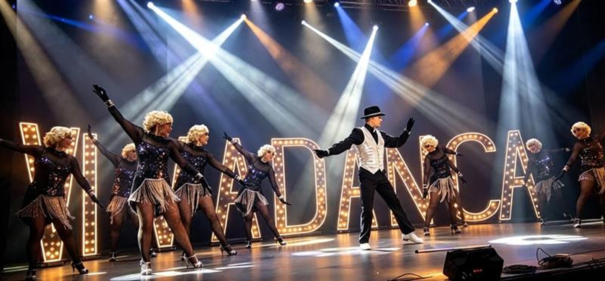
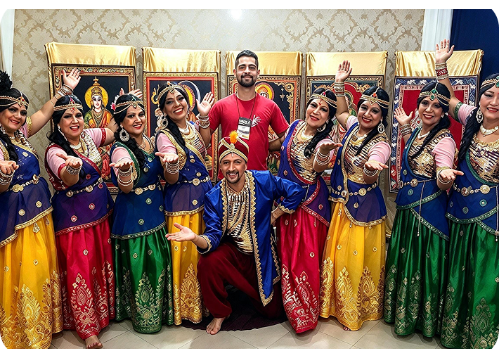

Dança · encontro · longevidade
A vida continua.
O movimento também.
Somos o Viva Dança Sorocaba 60+.
Histórias de vida que se encontram e ganham
uma nova expressão no palco.
Experiência que se
transforma em arte.
Nossa essência
Nossa história.
Sempre em movimento.
O Viva Dança nasceu do encontro entre mulheres que encontraram na dança um espaço de expressão, aprendizado e convivência.
Em Sorocaba, ensaios e apresentações se transformaram em vínculos, amizades e uma nova maneira de viver a maturidade com arte e protagonismo.

Viva Dança em cenaNosso repertório
Cada gesto,
uma história.
No palco, nossas experiências encontram outras formas de dizer. Conheça as coreografias que fazem parte do caminho do Viva Dança.
Por trás do palco
A arte do encontro.
A força de estar junto.
Antes do espetáculo, existem pessoas.
Dedicação, sensibilidade e muitas
histórias para compartilhar.

Nosso grupo

Histórias que se cruzam
Nossos encontros
Nos vemos no palco.
Acompanhe a programação
e os próximos encontros do grupo.
Agenda de apresentações
Consulte datas, locais e informações dos eventos.
Encontros que viraram memória
Revisite os momentos que construíram nossa trajetória.
Repertório e memória
O que vivemos
fica na história.
Um acervo de movimentos, encontros e conquistas que continuam a inspirar nosso caminho.
Novas histórias começam com um encontro
Faça parte deste
movimento.
Para conversar com o grupo, conhecer nosso trabalho
ou construir novas possibilidades juntos.